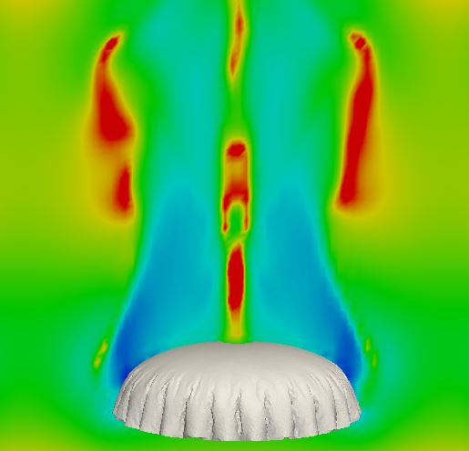

Convergence test
6.4.2013
Most of the criticize about spring-mass model is its convergence problem to continuum fabric. This problem can be overcome by considering the angle energy two adjacent spring. The convergence was achieved at 1st order by making some test on simple 2d and 3d cases
Parachute Simulation
7.30.2013
Parachute simulation of inflation, coupling with incompressible fluid solver
Parallel communication test with MPI library
11.20.2014
Parallel communication of fluid and canopy is achieved by dividing domain to some sub-domains and then appending buffer to them. Parallel communications are needed before inquiring information from neighbours.